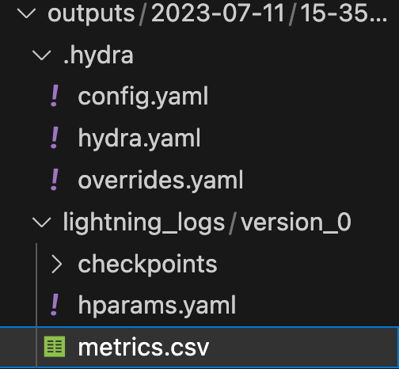

Keep Track of Your Experiments with Hydra
Configure hyperparameters using YAML files and speed up your research!.
June 11, 2024 · Hydra, MLOps
Introduction
In the same way that it is impossible to write code that does not contain a bug within it on the first try, it is impossible to train a model that is the right one on the first try.
Those who have some experience in Machine Learning and Deep Learning know that you often have to spend a lot of time choosing the right hyperparameters of models. These hyperparameters are for example learning rate, batch size, and number of classes in output, but these are just some of the most common, a project can have hundreds of such parameters.
By changing the hyperparameters we could get different results (better or worse), and at some point keeping track of all the tests done is very hard.
Here’s what I did for a very long time: I used to write down all these hyperparameters by hand in an Excel sheet and write next to it the result of each experiment, the loss value for example. Later I "evolved" and started writing configuration files for the hyperparameters, in which I put various values that I wanted to test. I used to write custom Python functions that would read those values and put them into the training function. A YAML file is basically a hierarchically constructed file where you can insert keys and values like the following:
data:
path: "data/ESC-50"
sample_rate: 8000
train_folds: [1, 2, 3]
val_folds: [4]
test_folds: [5]
batch_size: 8
model:
base_filters: 32
num_classes: 50
optim:
lr: 3e-4
seed: 0
trainer:
max_epochs: 10I later discovered Hydra, an open-source framework which made this whole process easier and even faster.
Let’s get started!
Suppose we are developing a simple Machine Learning project using PyTorch. As usual, we create a class for the dataset, instantiate the dataloaders, create the model and train. In this example, I will use PyTorch Lightning to better organize the code, in which we have a Trainer object, similar to what you do in Keras. If you are used to PyTorch you will also understand Lightning in no time.
For our example, we could use the famous ESC50 dataset that you can find for free here.
First, we import all the libraries we will need. I will run the code using Deepnote.
As usual, we implement a PyTorch class to manage the dataset.
We implement the model using Lightning. I won’t describe the model, because that’s not what’s important, it’s not even important if you don’t have experience with audio-related tasks, what’s important is just how to structure and use Hydra to experiment.
Finally, the train function.
Add Hydra configuration
In the above code, you see that there are many hard-coded parameters such as batch size, folds used for train-val-test split, number of epochs, and more.
I want to find the best parameters and then launch various experiments and judge from the results. Hydra makes this very easy, let’s see, how to install and use this library.
Now we create a configuration file called "default.yaml" in a new folder called configs.
The file will contain key-value pairs with all the hyperparameters we want to test. Here is an example.
data:
path: "data/ESC-50"
sample_rate: 8000
train_folds: [1, 2, 3]
val_folds: [4]
test_folds: [5]
batch_size: 8
model:
base_filters: 32
num_classes: 50
optim:
lr: 3e-4
seed: 0
trainer:
max_epochs: 10Now we want to pass these parameters dynamically to the train function. Hydra allows us to use a decorator to do this.
As you can see the decorator defines the folder and file name to be used with the parameters. And the hard-coded values have been changed by going to take the file values and treating them in Python as a dictionary, very simple!
You will notice, however, that in the Audionet Model the expected input has been changed so that it accepts a dictionary of parameters in the following way.
Now everything is ready. Try running train() and Hydra will produce results that are organized and easy to verify.
Here is an example of Hydra’s output in my case.

As we see, Hydra provides us with a recap of the parameter configuration file, lightning logs regarding model training, and a CSV file to check metrics.
All this, however, is only the basis of Hydra, which is a tool that allows you to do much more.
One very nice feature is to run the script via the terminal and add or change file parameters from the command line.
For example, if we want to change the seed quickly without tweaking the YAML file we can do that:
python my_app.py 'seed=1'We can also add some keywords to the config file that is given as input to the Trainer in the line pl.Trainer(cfg.trainer). To add a keyword we use the + command from the terminal.
python train.py +trainer.fast_dev_run = TrueSometimes you might want to save experiments in a folder other than the default one, and even this can be set up easily from the command line by going to override Hydra’s hydra.run.dir parameter.
python train.py data.sample_rate=4000 hydra.run.dir="outputs/sample_rate_4000"Final Thoughts
Hydra is a framework created on top of OmegaConf, which allows us to manage our experiments very easily. Once we have implemented the code and pipeline, our job will be to track the progress of the models and change the configuration as we see fit.
In this article, we have seen a practical example of how to use Hydra, but there are many more advanced features that we have not covered for example launching multi-runs to run multiple experiments in parallel. And for that, I suggest you go read the documentation. If you were interested in this article follow me on Medium! 😄
💼 Linkedin ️| 🐦 Twitter | 💻 Website
This article was published by Towards Data Science